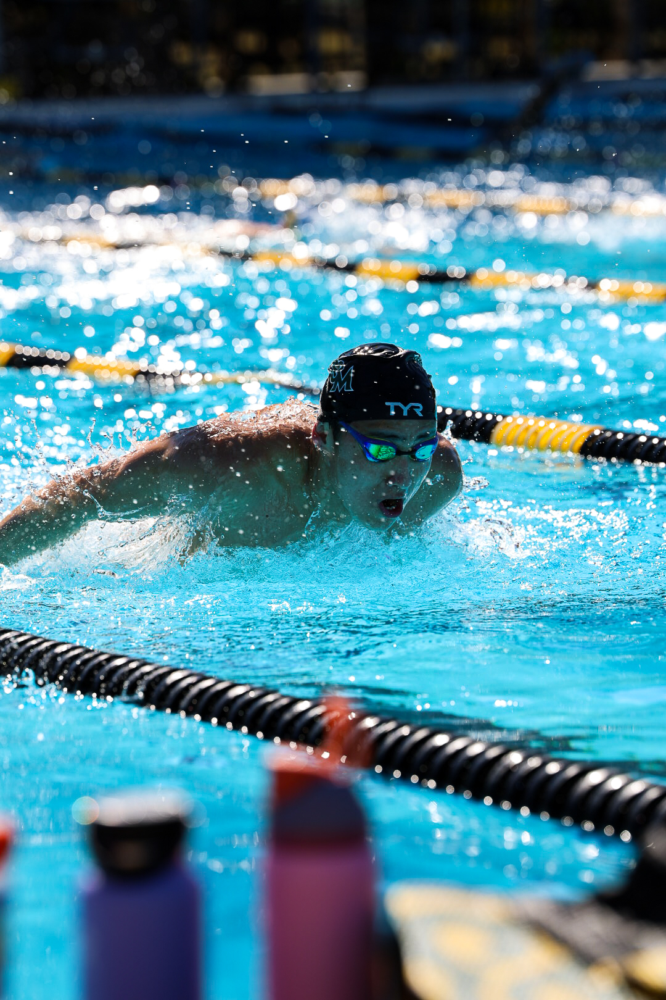
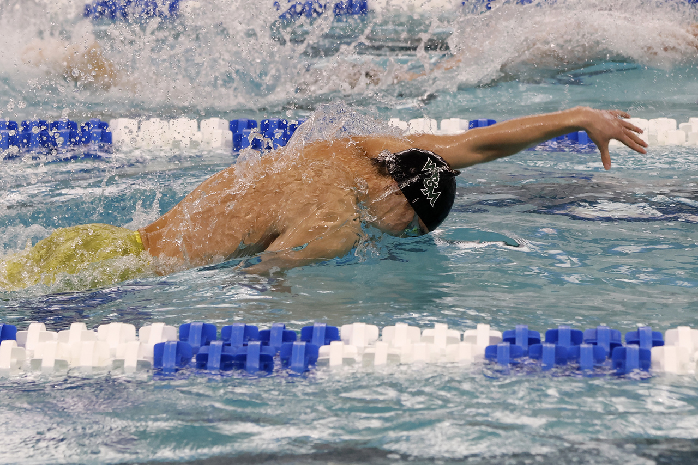
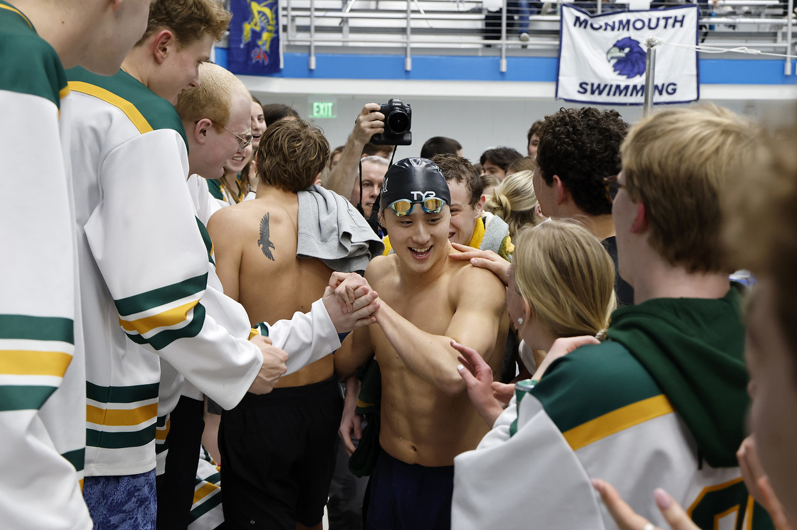
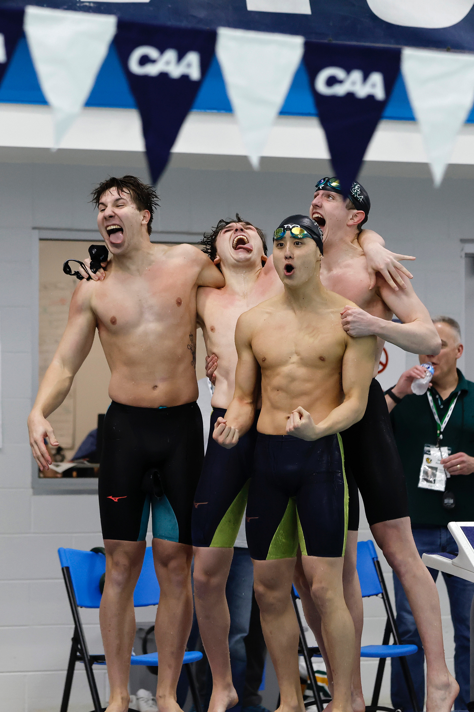

A Climate Justice Story
Climate change. Inequality. The sport I love.
↓ Dive InI've been swimming for over 15 years, and the water has always felt like home. Whether in pools, oceans, or lakes, I've always been drawn to the feeling of moving through it and competing.
Now, I swim on the William & Mary Tribe swimming varsity team as a multiple CAA conference medalist. As a data science minor, this project brings those parts of my life together: using data to expose hidden injustices in swimming.
"What happens to swimming as climate change worsens — and how can we keep it alive?"




Not all water is safe to swim in
Not everyone has equal access to swimming
Pool infrastructure is resource-intensive
About 70 million pounds of atrazine are applied to American crops every year. Every spring, rain washes it off farm fields and into rivers, lakes, and drinking water systems. The EPA's legal limit is 3 parts per billion. The data below — collected by atrazine's own manufacturer, Syngenta, under a legal agreement with the EPA — shows what actually ended up in finished drinking water across seven states from 2010 to 2019.
Source: EPA Atrazine Monitoring Program (AMP), 2010–2019 — epa.gov · Finished drinking water samples only · Red bars = peak reading exceeded EPA's 3 ppb legal limit
It's an endocrine disruptor linked to birth defects, hormone disruption, and cancer. In 2025, the International Agency for Research on Cancer classified it as a probable human carcinogen. Frogs exposed at levels 30× below the EPA limit changed sex.
Syngenta paid scientist Dr. Tyrone Hayes to study atrazine — then tried to suppress his findings when he found harm. When he went public, they sent reps to follow and discredit him. In 2013, they settled a drinking water contamination lawsuit for $105 million.
In 2003, the EPA let Syngenta into closed-door negotiations and re-approved atrazine with no restrictions — while the EU banned it. In 2020, they re-approved it again using a safety model built by Syngenta itself, allowing 50% more into US waterways. Atrazine is banned in Switzerland — Syngenta's home country.
Swimming is often portrayed as a universal sport — but access to lessons, facilities, and safe water is deeply unequal. The CDC's 2024 Vital Signs report measured exactly this: who knows how to swim, and who has ever had a lesson, broken down by race. The results are stark.
Source: CDC Vital Signs, May 2024 — cdc.gov/vitalsigns/drowning · MMWR Vol. 73, No. 20 · All figures from a nationally representative survey, Oct–Nov 2023
Every pool requires energy to heat, filter, and light — and water to fill and top off. Adjust the slider below to see how pool size affects resource use.
More frequent HABs close open-water venues. Pool maintenance costs rise as energy and water become more expensive in drought-prone regions.
Public pools in underfunded communities close at higher rates. Competitive swimming consolidates around well-resourced institutions.
Swimming becomes a sport defined by access to resources — a luxury rather than a community activity. Who still gets to swim?
Swimming has shaped who I am; I owe it my life and identity. It's given me structure, purpose, and a sense of belonging that I haven't found anywhere else.
Because of that, I think we have a responsibility to protect it, to make it more sustainable, and to ensure others have access to it. If something has given so much to us, we should be thinking about how to give back to it.
A Climate Justice Educational Engagement project · EDUC 317